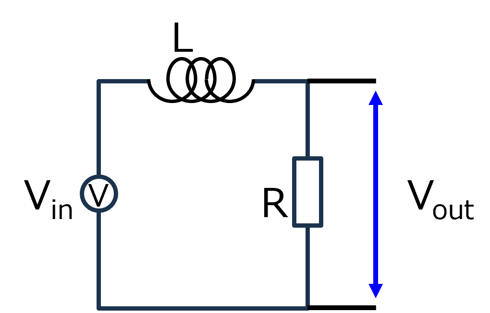
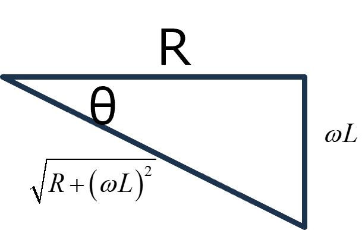
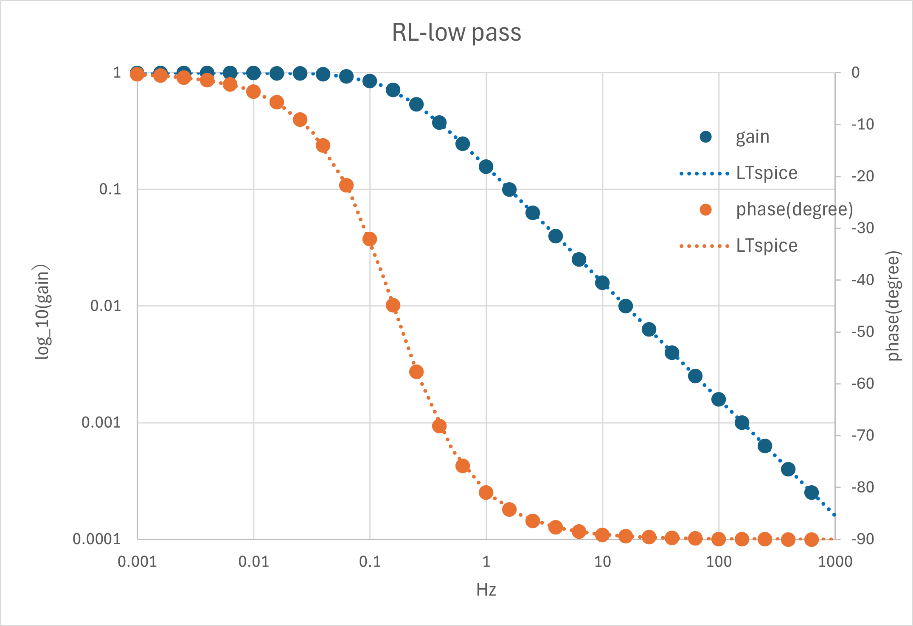

回路-23
RLローパスフィルタ
次はRLのローパスフィルタ．

これも，単なる，RL直列回路，なんですね．．．．どの部分の電圧を取るかによってフィルター特性が変わるようです．
RC回路と違い，Rがローパスフィルタとなります．
・インピーダンス
一番定番の，インピーダンス，から求めていきます．
インピーダンスなので，定常状態，での特性を見ることになります．スイッチオンでの過渡現象は見ません．
これが一番わかりやすい方法だと思います．
全体のインピーダンスは，
\(\Large Z = \displaystyle R + j \omega L \)
となります．抵抗部の電圧，Vout，のインピーダンスは，
\(\Large Z_{out} = \displaystyle R \)
となるので，伝達関数，は，
\(\Large G( j \omega) = \displaystyle \frac{V_{out}}{V_{in}} = \frac{Z_{out} \cdot I}{Z \cdot I} = \frac {Z_{out}}{Z} = \frac{ R}{R + j \omega L} \)
\(\Large \displaystyle = \frac{R \ (R - j \omega L)} {R^2 + ( \omega L)^2 } \)
となります．利得は，複素数の絶対値を考えればいいです．
複素数の絶対値は，
\(\Large z = a + b \ i\)
\(\Large |z| =\sqrt{ a^2 + b^2} \)
となるので，
\(\Large G( j \omega) = \displaystyle \frac{R \ (R - j \omega L)} {R^2 + ( \omega L)^2 } \)
\(\Large | G( j \omega)| = \displaystyle \frac{R } {R^2 + ( \omega L)^2 } \ \sqrt{R^2 + ( \omega L)^2} = \frac{R } { \sqrt{R^2 + ( \omega L)^2}}
= \frac{1 } { \sqrt{1 + \frac{( \omega L)^2}{R}}}
\)
となります．
\(\Large \omega \sim 0 \ : \ | G( j \omega)| = 1 \)
\(\Large \omega \sim \infty \ : \ | G( j \omega)| = 0 \)
となり，ローパスフィルタ，となります．
位相角は，複素項／実数項，となりますので，
\(\Large tan \ \theta = \displaystyle \frac {-\omega L }{R} =-\frac {\omega L }{R}\)
\(\Large \theta = \displaystyle tan^{-1} \left( -\frac {\omega L }{R} \right) = - tan^{-1} \left(\frac {\omega L }{R} \right)\)
となります．

実際に，LTspice，とエクセルでの計算結果を確認すると，
R ： 10 Hz
L ： 10 H
において，

と一致することがわかります．